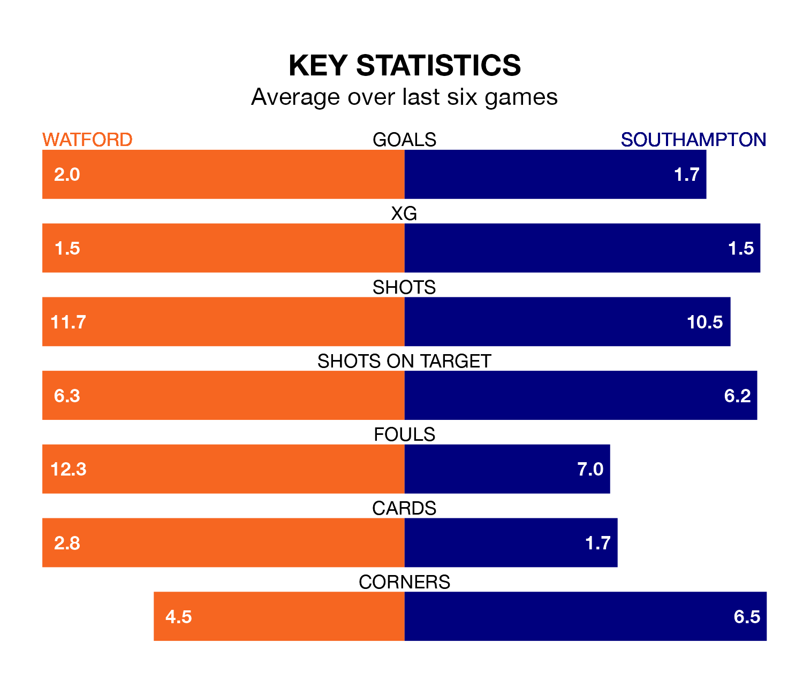

Southampton come to Vicarage Road to play Watford on Saturday in excellent form, having collected 16 points from their last six games.
The visitors have won five and drawn one of their last six fixtures, while the Hornets have three wins and two draws.
With 31 goals in 19 games so far this season, Southampton are scoring more than average in the league with 1.6 goals per game. And they are conceding at an average rate, letting in 27 goals at a rate of 1.4 per game.
Watford are also above average scorers, with 1.5 goals per game, compared to a league average of 1.4. They have conceded 1.2 goals per game.
In Adam Armstrong, the Saints have one of the league's most on-form strikers so far this season. He has notched 12 goals in 19 appearances, to sit second in the scoring charts.
His goal rate of one every 136 minutes is slightly quicker than that of Mileta Rajovic, the Hornets' top scorer with a goal every 126 minutes, and a total of seven goals in 16 games.
In the last 10 years, Watford and Southampton have played each other on 14 occasions. Watford won two of them, Southampton six, and they drew six times.
On average, the Hornets scored 1.0 goal and the Saints 1.4 in those matches.
Their last meeting was on July 23 2022, when they played out a 0-0 draw.
The visitors are fourth in the table after 19 games, of which they have won 11 and drawn four, earning 37 points.
The home side are six places behind Southampton in 10th, with seven wins and six draws putting them on 27 points.
Watford's last match was on December 2, a 2-1 win against Hull City, with Edo Kayembe and Wesley Hoedt getting the goals for the Hornets.
Southampton beat Cardiff City 2-0 last time out, also on December 2, with Adam Armstrong on the scoresheet.
